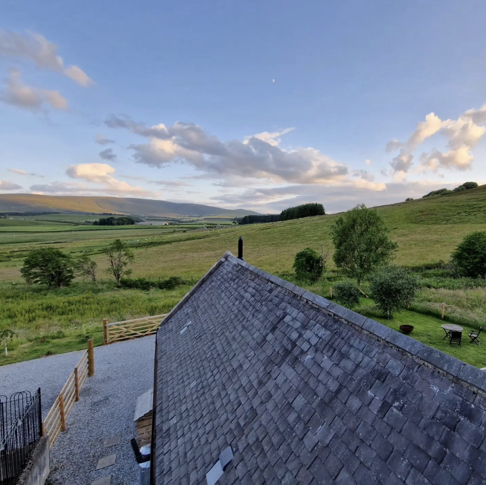
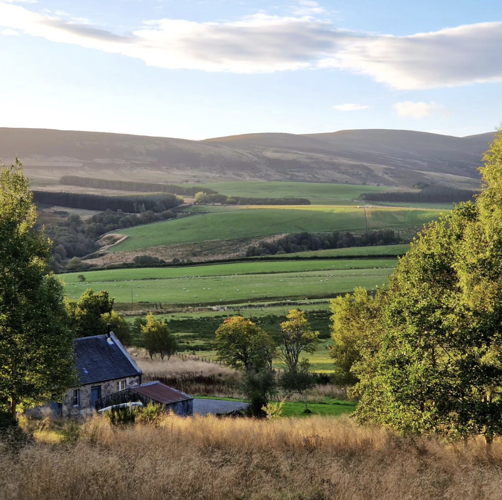
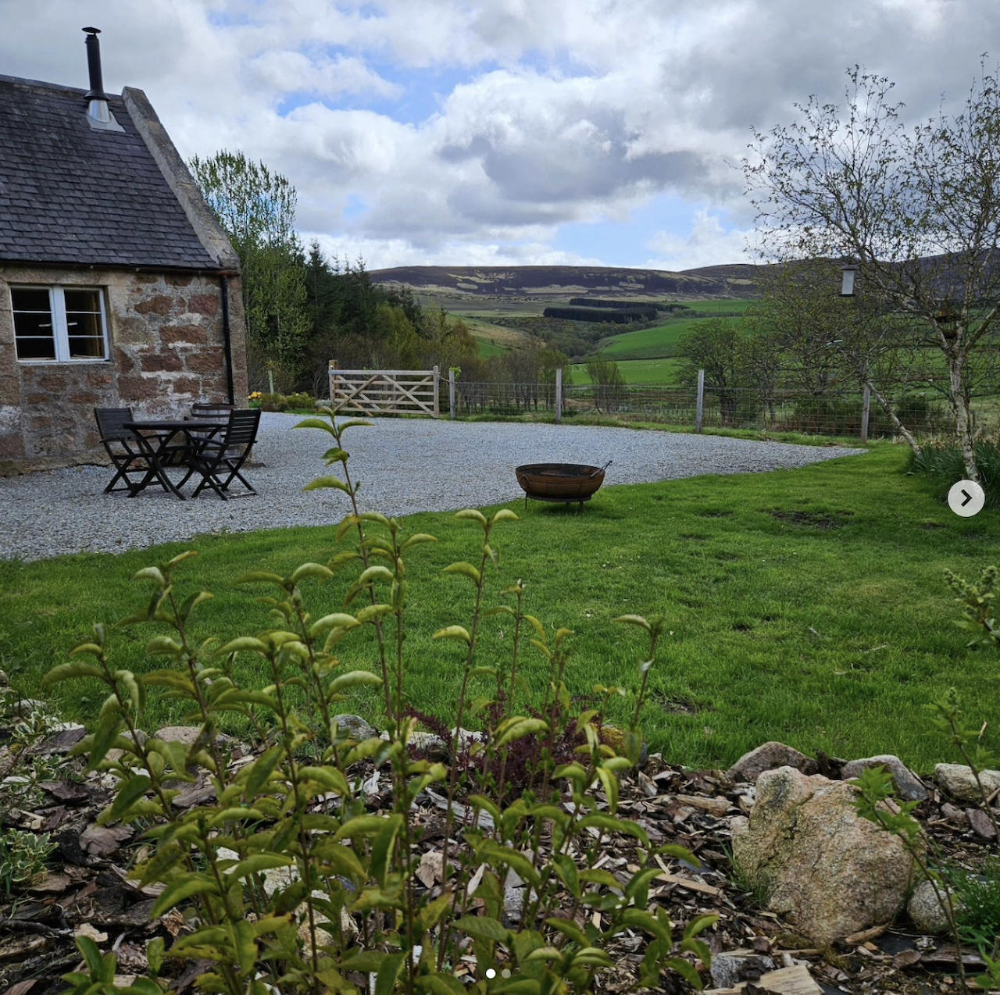
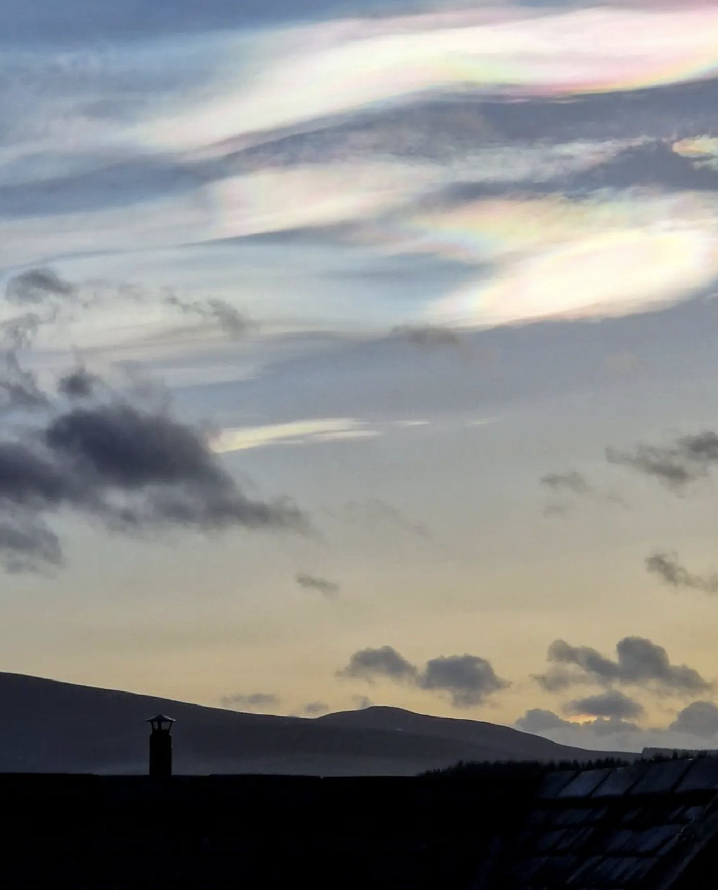
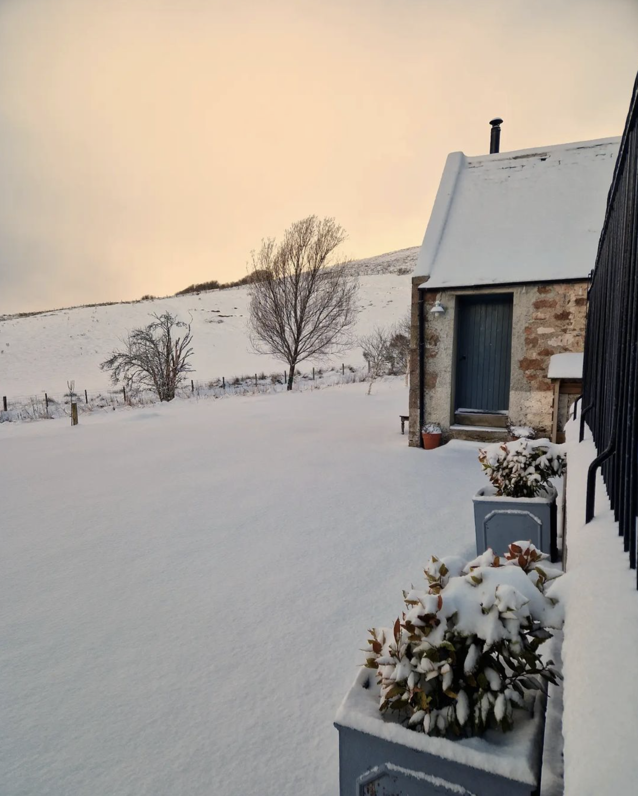
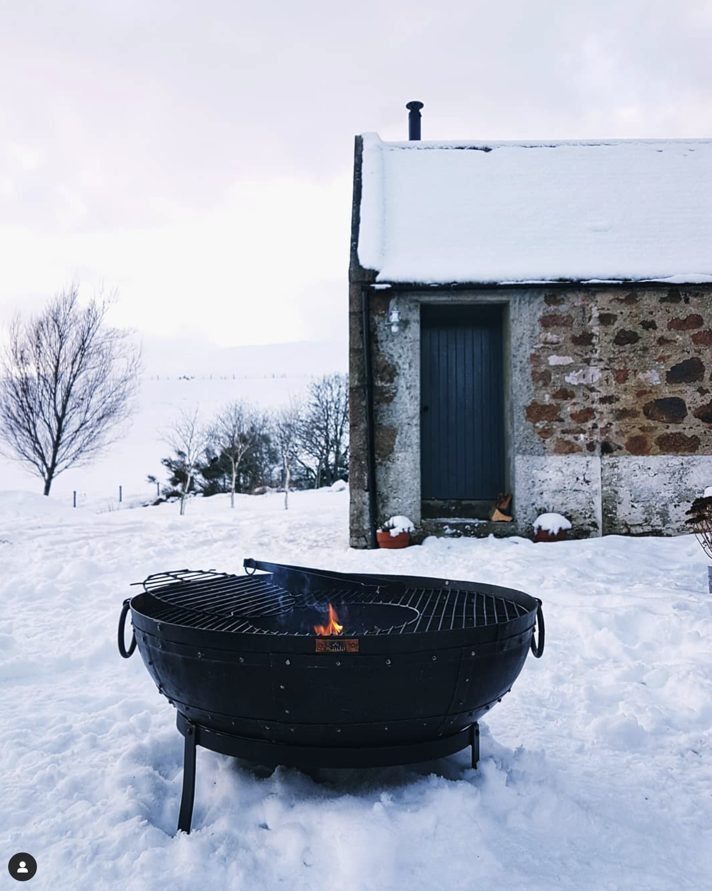
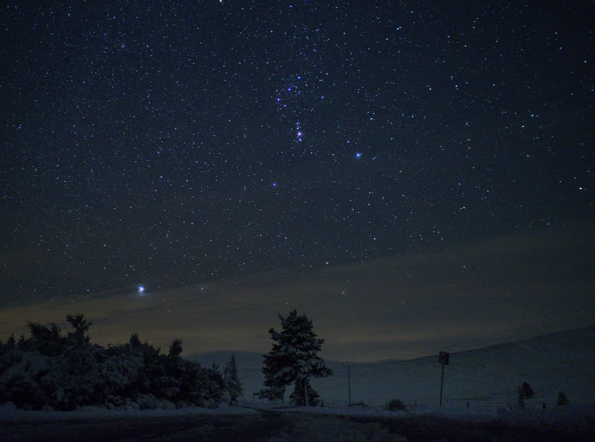
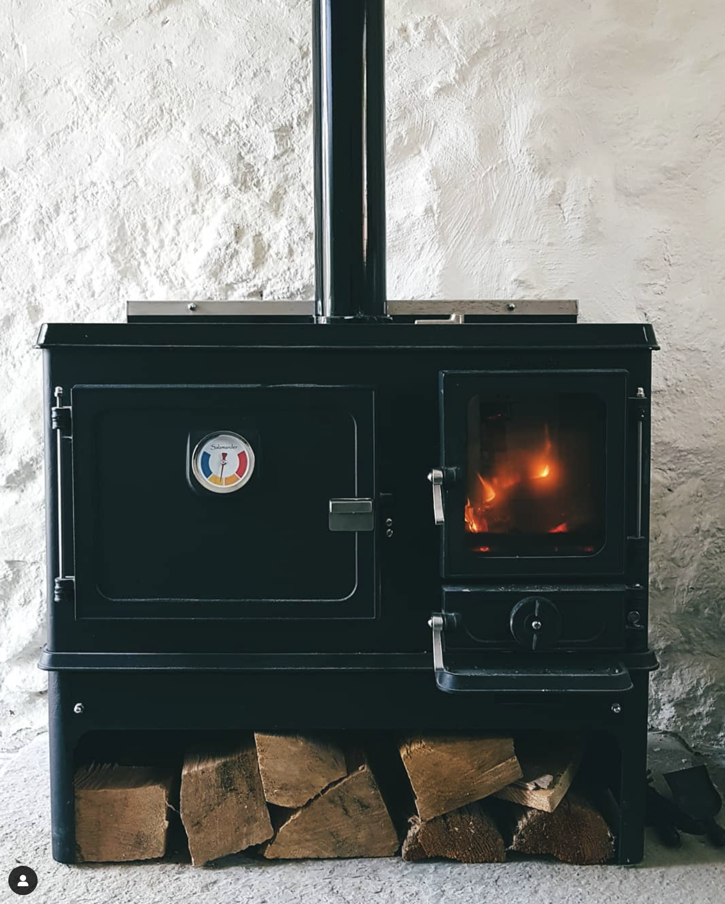

Beatshach Bothy
A secluded, traditional granite bothy nestled into side of Ben Rinnes. Located in the heart of Speyside, Beatshach Bothy is the perfect place to enjoy the outdoors, crystal clear skies and, of course, a dram or two.
Bothy
a small hut or cottage, especially one for housing farm labourers or for use as a mountain refuge
About Beatsnach Bothy
A traditional Bothy built from local granite situated at the foot of Ben Rinnes near Dufftown. A comfortable self catering studio layout boasting a wood fired range for heating, kitchenette, double bed, dining area, a separate bathroom and with original windows. The bothy offers beautiful views of the Corryhabbies, is situated in private grounds of 6 acres, you can relax and enjoy the local wildlife. With 15 distilleries within 5 miles, this location is ideal to explore the Malt Whisky Capital.Tucked snugly away at the head of the Beatshach, an isolated glen in the heart of Speyside’s whisky country, whatever the season the Beatshach Bothy offers a unique if unusual holiday destination for those looking to combine their accommodation with a country living experience. The Bothy, with spectacular views of the surrounding area, was built approx 1860, on the site of an earlier holding, by the Glenrinnes Estate as part of their kennels complex where also prior to the use of motor vehicles, it was home to the garrons (highland ponies) used on the local hills for grouse and deer. Set in six acres of grounds The Bothy, occupies the main wing of the Kennels building and stands across from the owner’s cottage.









Our Local Recommendations

Getting Here
Edinburgh / Glasgow: 3.5 hours
Aberdeen Airport: 1 hour
Inverness Airport: 1.5 hours
Huntly Train Station: 30 minutes
© Copyright 2024. All Rights Reserved.